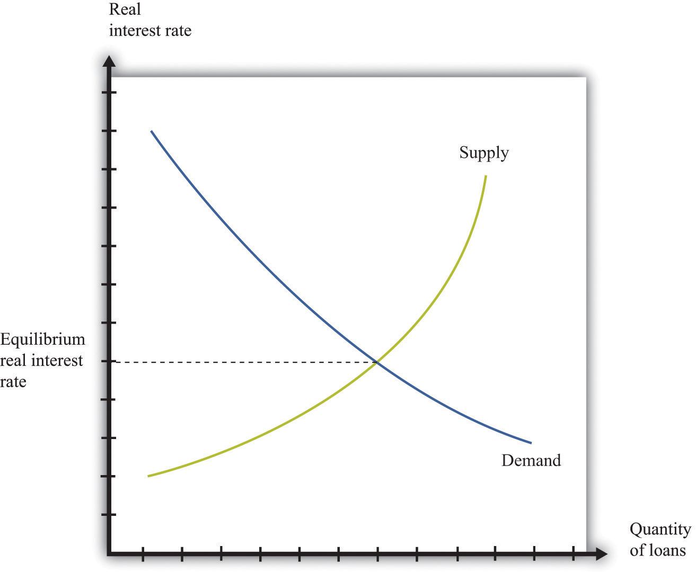
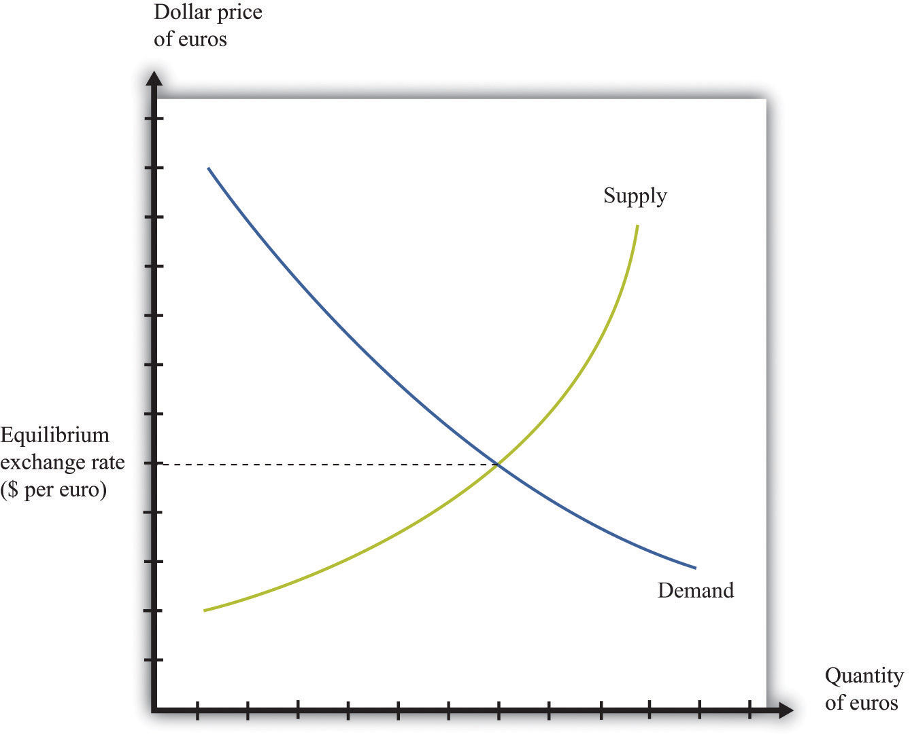
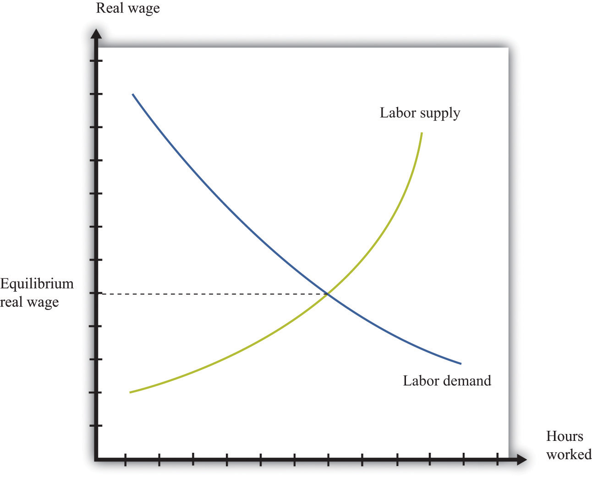
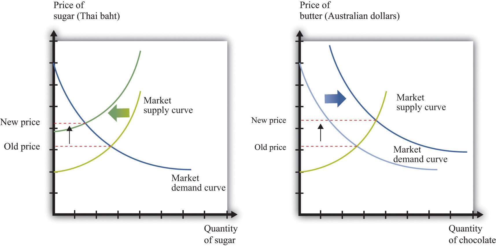

In other chapters in this book, we use the supply-and-demand framework to look at how goods and services are traded.We focus on labor in Chapter 9 "Growing Jobs" and Chapter 11 "Raising the Wage Floor". Chapter 10 "Making and Losing Money on Wall Street" looks at both the loan/credit market and the foreign exchange market. Here we give a brief overview of these markets.
The credit market (or loan market)Where suppliers and demanders of credit meet and trade.—we use the terms loans and credit interchangeably—is where suppliers and demanders of credit meet and trade (Figure 8.16 "Credit Market Equilibrium"). On the supply side are households and firms that, for various reasons, have chosen to save some of their current income. On the demand side are other households, firms, and (in some cases) the government. Households buy houses and cars, so they often need to borrow funds to finance those purchases. Firms seek credit to finance investment, such as the construction of a new production plant. Finally, governments borrow to finance some of their expenditures.
Figure 8.16 Credit Market Equilibrium
This diagram represents the loan or credit market.
The price of credit is the real interest rate, which is a measure of the value of the interest charged on a loan, adjusted for inflation. There are many different markets for credit because there are different kinds of loans in the economy.Chapter 10 "Making and Losing Money on Wall Street" discusses these. Associated with these different credit markets are different interest rates. For simplicity, though, we often suppose that there is a single market for credit.
Toolkit: Section 31.6 "The Credit Market"
You can review the credit market and the real interest rate in the toolkit.
The demand for credit decreases as the real interest rate increases. When it becomes more expensive to borrow, households, firms, and even governments want fewer loans. The supply of credit by households increases with the real interest rate. When the return on savings increases, households and firms will typically save more and so supply more loans to the market.The response of savings to changes in the real interest rate is discussed more fully in Chapter 5 "Life Decisions".
The news is filled with stories about interest rates increasing and decreasing. You can always use some version of Figure 8.16 "Credit Market Equilibrium" to understand why interest rates are changing. Ultimately, any change in the interest rate is due to a shift in either the supply of credit or the demand for credit. For example, if construction firms anticipate high future demand for housing, they will think that building new homes is a good use of investment funds. They will borrow to finance such construction. The increased demand for credit will shift the demand curve in Figure 8.16 "Credit Market Equilibrium" outward, and interest rates will increase. As another example, if individuals in other countries wish to increase their investment in US assets, this will shift the supply of credit outward, and interest rates will decrease.
Two of the most important players in the credit market are the government and the monetary authority. If the US federal government borrows more, this shifts the demand for credit outward and increases the interest rate. (The government is such a big player in this market that its actions affect the interest rate.) The monetary authority, meanwhile, buys and sells in credit markets to influence the real interest rate in the economy.The actions of the Federal Reserve and other monetary authorities are studied in detail in macroeconomics courses.
If you travel abroad, you need to acquire the currency used in that region of the world. If you take a trip to Finland, Russia, and China, for example, you will undoubtedly buy euros, rubles, and yuan along the way. To do so, you need to participate in the foreign exchange marketThe place where suppliers and demanders of currencies meet and trade., trading one currency for another. Foreign exchange markets operate like other markets in the economy. The price—which in this case is called the exchange rateThe price in the foreign exchange market. It measures the price of one currency in terms of another.—is determined by the interaction of supply and demand.
Toolkit: Section 31.20 "Foreign Exchange Market"
The foreign exchange market is the market where currencies are traded. The price in this market is the price of one currency in terms of another and is called the exchange rate.
Figure 8.17 "Foreign Exchange Market Equilibrium" shows an example of a foreign exchange market—the market in which US dollars are exchanged for euros. On the horizontal axis, we show the number of euros bought and sold on a particular day. On the vertical axis is the exchange rate: the price of euros in dollars. This market determines the dollar price of euros just like the gasoline market in the United States determines the dollar price of gasoline.
Figure 8.17 Foreign Exchange Market Equilibrium
This diagram represents the foreign exchange market in which euros are bought and sold with US dollars.
On the demand side, there are traders (households and firms) who want to buy European goods and services. To do so, they need to buy euros. This demand for euros expressed in dollars need not come from US households and firms. Anyone holding dollars is free to purchase euros in this market. On the supply side, there are also traders (households and firms) who are holding euros and who wish to buy US goods and services. They need to sell euros to obtain US dollars.
There is another source of the demand for and the supply of different currencies. Households and, more importantly, firms often hold assets denominated in different currencies. You could, if you wish, hold some of your wealth in Israeli government bonds, in shares of a South African firm, or in Argentine real estate. But to do so, you would need to buy Israeli shekels, South African rand, or Argentine pesos. Likewise, many foreign investors hold US assets, such as shares in Dell Computer or debt issued by the US government. Thus the demand and the supply for currencies are influenced by the portfolio choices of households and firms. In practice, the vast majority of trades in foreign exchange markets are conducted by banks and other financial institutions that are adjusting their asset allocation.
In addition to households and firms, monetary authorities also participate in foreign exchange markets. For example, the US Federal Reserve Bank monitors the value of the dollar and may even intervene in the market, buying or selling dollars in an attempt to influence the exchange rate.
If you open a newspaper or browse the Internet, you can quickly find the current price of euros. This price changes all the time in response to changes in the currency’s demand and supply. For example, if you read that the euro is getting stronger, this means that the euro is becoming more expensive: you must give up more dollars to buy a euro. This increase in the price of the euro could reflect either an outward shift in the demand for euros, say as US households demand more goods from Europe, or an inward shift of the euro supply curve if holders of euros are not as willing to sell them for dollars.
In the markets for goods and services, the supply side usually comes from firms. In some cases, buyers are other firms (businesspeople call these B2B transactions), whereas in other cases buyers are households (often called B2C transactions). For the most part, though, households are not on the supply side of these markets. In the labor market, by contrast, firms and households switch roles: firms demand labor and households supply it.
Supply and demand curves for labor are shown in Figure 8.18 "Labor Market Equilibrium". Here the price of labor is the real wage. The real wage measures how much in the way of goods and services an individual can buy in exchange for an hour’s work. It equals the nominal wage (the wage in dollars) divided by the general price level.
Toolkit: Section 31.3 "The Labor Market"
You can review the labor market and the real wage in the toolkit.
The demand for labor comes from the fact that workers’ time is an input into the production process. This demand curve obeys the law of demand: as the price of labor increases, the demand for labor decreases. The supply of labor comes from households that allocate their time between work and leisure activities. In Figure 8.18 "Labor Market Equilibrium", the supply of labor is upward sloping. As real wage increases, households supply more labor. There are two reasons for this: (1) higher wages induce people to work longer hours, and (2) higher wages induce more people to enter the labor force and look for a job.Chapter 11 "Raising the Wage Floor" explains more about nominal wages and real wages, and we study the individual demand for labor in Chapter 9 "Growing Jobs". The decisions underlying labor supply are explained more fully in Chapter 4 "Everyday Decisions".
Figure 8.18 Labor Market Equilibrium
The equilibrium real wage is the price where supply equals demand in the labor market.
As with the other markets, we can use Figure 8.18 "Labor Market Equilibrium" to study comparative statics. For example, if an economy enters a boom, firms see more demand for their products, so they want to buy more labor to produce more product. This shifts the labor demand curve outward, with the result that real wages increase and employment is higher.
You have now seen equilibrium in a wide variety of markets: goods (chocolate), loans, foreign exchange, and labor. Actual economies contain hundreds of thousands of markets. Analyzing a single market would be enough if the markets in an economy were not connected, but markets are interrelated in many ways:A topic in advanced studies of economics is the simultaneous equilibrium of all markets. Because all markets are linked, it is necessary to find prices for all goods and services and all inputs simultaneously such that supply equals demand in all markets. This is an abstract exercise and uses lots of mathematics. The bottom line is good news: we can usually expect an equilibrium for all markets.
The following newspaper story from the Singaporean newspaper the Straits Times nicely illustrates linkages across markets.
Singaporeans with a sweet tooth could soon find themselves paying more for their favourite treats, as bakers and confectioners buckle under soaring sugar prices.
Since March last year, the price of white sugar has shot up by 70 per cent, according to the New York Board of Trade. As if that didn’t make life difficult enough for bakers, butter and cheese prices have also risen, by 31 per cent and 17 per cent respectively.
The increases have been caused by various factors: a steep drop in Thailand’s sugarcane production due to drought, higher sea freight charges, increasing demand from China’s consumers for dairy products and the strong Australian and New Zealand dollar.See http://straitstimes.asia1.com.sg. We also discuss this quote in Chapter 6 "eBay and craigslist".
Look at the last paragraph. First, we are told that a drought has caused a drop in sugarcane production in Thailand. Part (a) of Figure 8.19 "The Sugar Market in Thailand and the Butter Market in Australia" shows this market. We can see that a decrease in sugar production will increase the price of sugar. In this picture we are showing the market in Thailand, so the price is measured in Thai baht.
Figure 8.19 The Sugar Market in Thailand and the Butter Market in Australia
(a) The market for sugar in Thailand is affected by a drought, which has decreased the sugar supply, causing an increase in sugar prices measured in Thai baht. (b) In the Australian butter market, increased demand from China causes the demand curve to shift outward, increasing the price of butter measured in Australian dollars.
We are also told that there has been increased demand for dairy products coming from China. Australia and New Zealand are the major suppliers of dairy products in Southeast Asia. Part (b) of Figure 8.19 "The Sugar Market in Thailand and the Butter Market in Australia" shows the market for butter in Australia. Increased demand from China shifts the demand curve outward, leading to an increase in the price of butter. For this market, we measure the price in Australian dollars.
From the perspective of Singapore bakers, both of these price changes show up as increases in their marginal cost. Moreover, the article reveals that these changes are exacerbated by other factors. Shipping costs have increased, so it also costs more to obtain sugar from Thailand and butter from Australia. And the Australian dollar has appreciated relative to the Singapore dollar, making goods imported from Australia even more expensive.
These are examples of B2B transactions. In fact, there is likely a whole chain of such transactions between, say, the Australian dairy farmer and the Singaporean baker. Farmers sell milk to butter producers, butter producers sell to wholesalers, and wholesalers sell to Singaporean importers and bakeries.
This story also illustrates again the powerful way in which market prices provide information that helps us understand the efficient allocation of resources. Drought in Thailand has reduced the amount of sugar available in the world. Through the magic of a series of prices, one of the results is that people in Singapore are less likely to eat cake for dessert.